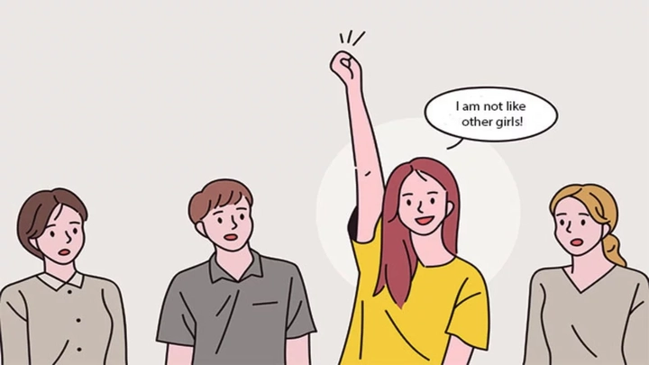

Giải thích thuật ngữ Pick me Girl: những cô gái độc hại
1. Pick Me Girl là gì?
“Pick Me Girl” là một thuật ngữ dùng để chỉ những cô gái luôn cố gắng thể hiện rằng mình “khác biệt” so với những cô gái khác — thường bằng cách phủ nhận hoặc xem nhẹ những đặc điểm được coi là “nữ tính truyền thống”.
Họ muốn được thu hút và được nam giới yêu thích hoặc công nhận bằng cách nói ngầm rằng:
“Tôi không giống những cô gái khác đâu, tôi đặc biệt hơn.”
Ví dụ, một “pick me girl” có thể nói:
-
“Tôi không bao giờ trang điểm, mấy cô kia chỉ toàn sống ảo.”
-
“Tôi thích chơi game, chứ không thích shopping như những cô khác.”
-
“Tôi chơi thân với con trai vì con gái toàn drama thôi.”
Thoạt nghe, điều đó có vẻ chỉ là một sở thích cá nhân vô hại — kiểu như việc một cô gái nói rằng cô “hợp với con trai hơn vì ít drama hơn”. Tuy nhiên, nếu nhìn sâu hơn, “Pick Me Girl” phản ánh một tâm lý phức tạp: mong muốn được công nhận, được “chọn” và được xem là khác biệt so với phần còn lại của phụ nữ.
Họ thường cố gắng tách mình ra khỏi hình ảnh “cô gái điển hình” bằng cách hạ thấp hoặc phủ nhận những hành vi, sở thích mà phụ nữ khác thường có, với hy vọng điều đó khiến họ nổi bật trong mắt đàn ông.
Những câu nói nghe và thái độ của họ thoạt qua có vẻ vô hại, nhưng ẩn sau là nhu cầu chứng minh giá trị bản thân thông qua ánh nhìn của nam giới, thay vì tự định nghĩa bằng tiêu chuẩn riêng. Đây không chỉ là vấn đề cá nhân, mà còn là hệ quả của áp lực xã hội về giới tính, nơi phụ nữ được khen ngợi khi “dễ chịu”, “ngoan ngoãn”, “không như những cô khác”.
Dần dần, điều này tạo ra một vòng luẩn quẩn: để được yêu thích, một số cô gái chọn cách xa lánh chính cộng đồng của mình, và điều đó vô tình củng cố định kiến mà họ muốn thoát khỏi.

2. Nguồn gốc của thuật ngữ “Pick Me Girl”
Cụm từ “Pick Me Girl” xuất hiện phổ biến trên mạng xã hội khoảng năm 2016 – 2018, đặc biệt trên TikTok, Twitter và Reddit.
Ban đầu, nó dùng để phê phán những cô gái có xu hướng cạnh tranh với phụ nữ khác bằng cách phủ nhận hoặc châm biếm giới tính của chính mình.
Ví dụ:
Một cô gái nói: “Tôi chẳng bao giờ than phiền như mấy cô gái khác, tôi mạnh mẽ lắm.”
Nghe có vẻ tự tin, nhưng thực ra câu nói đó vô tình củng cố định kiến rằng phụ nữ “yếu đuối và phiền toái”, còn cô ấy thì không – vì cô ấy khác biệt.
Theo thời gian, “pick me girl” trở thành một hiện tượng văn hóa mạng, phản ánh cách xã hội vẫn vô thức áp đặt tiêu chuẩn nam giới lên phụ nữ. Một số cô gái muốn được yêu thích, được chấp nhận, nên chọn cách “giảm nữ tính” của mình để phù hợp với những gì đàn ông thấy dễ chịu.
3. Tâm lý đằng sau một “Pick Me Girl”
Đằng sau hành vi đó không chỉ là sự giả tạo hay cạnh tranh – mà là nỗi sợ bị loại bỏ.
Nhiều chuyên gia tâm lý cho rằng, pick me girl thường xuất phát từ việc thiếu tự tin vào giá trị bản thân.
Họ tin rằng:
“Nếu tôi không đủ khác biệt, tôi sẽ không được chú ý.”
Một số đặc điểm thường thấy ở “pick me girl”:
-
Cảm thấy mình phải “chứng minh” điều gì đó để được yêu thích.
-
Dễ so sánh bản thân với phụ nữ khác.
-
Có xu hướng đồng tình với đàn ông khi họ chỉ trích phụ nữ khác.
-
Tìm kiếm sự công nhận từ nam giới hơn là từ chính mình.
-
Thường phủ nhận sự nữ tính (ví dụ: không thích makeup, không thích nói chuyện “con gái”).
Tất nhiên, không phải ai cũng cố tình như vậy. Nhiều người không nhận ra mình đang hành xử theo cách đó, bởi họ đã được xã hội “lập trình” rằng chỉ khi được nam giới công nhận, họ mới “đủ tốt”.
4. Tại sao “Pick Me Girl” trở nên phổ biến?
Trong thời đại mạng xã hội, việc được chú ý trở thành một dạng “giá trị xã hội”.
Một cô gái càng nổi bật, càng “khác biệt” thì càng được xem là “thú vị”. Và “pick me girl” chính là hệ quả của văn hóa so sánh, công nhận, và định danh bằng sự chú ý.
Có ba yếu tố chính khiến hiện tượng này lan rộng:
-
Áp lực từ tiêu chuẩn cái đẹp:
Khi các giá trị như “xinh đẹp – quyến rũ – dễ thương” bị thổi phồng, nhiều cô gái chọn cách đi ngược lại để nổi bật. Họ chọn “mộc mạc”, “tự nhiên”, “không drama” như một cách để “chống lại đám đông” – nhưng vẫn là để được công nhận. -
Ảnh hưởng từ mạng xã hội:
Các clip, meme, hoặc câu nói kiểu “Tôi không giống mấy cô kia đâu” xuất hiện tràn lan trên TikTok. Nó trở thành một trào lưu thể hiện cá tính, dù vô tình tạo ra sự chia rẽ trong giới nữ. -
Tác động của văn hóa nam quyền:
Từ lâu, xã hội đã gắn giá trị phụ nữ với mức độ “được đàn ông yêu thích”. Vì vậy, nhiều cô gái tiềm thức cho rằng cách tốt nhất để nổi bật là trở nên khác biệt – theo tiêu chuẩn của đàn ông.
5. Ví dụ thực tế về “Pick Me Girl”
Trong học đường:
Một bạn nữ nói:
“Mấy đứa con gái kia chỉ biết nói chuyện make-up với phim Hàn. Còn tôi thích chơi bóng đá với đám con trai.”
Thật ra, cô ấy có thể thật sự thích bóng đá, nhưng khi cô ấy so sánh và hạ thấp người khác để tôn mình lên, đó là biểu hiện của pick me.
Trong công sở:
Một nhân viên nữ thường nói:
“Tôi làm việc như đàn ông, không yếu đuối như mấy chị kia đâu.”
Nghe có vẻ tự tin, nhưng thực ra cô ấy vô tình phủ nhận sự đa dạng và giá trị của phụ nữ khác trong môi trường làm việc.
Trên mạng xã hội:
Một người đăng:
“Con gái gì mà cứ chụp hình sống ảo, tôi chỉ thích ăn phở đầu hẻm thôi.”
Điều đó nghe giản dị, nhưng cách thể hiện lại mang ý nghĩa tự nâng mình bằng cách phủ nhận người khác.
6. Tác hại của tâm lý “Pick Me Girl”
Hiện tượng này tưởng như vô hại, nhưng về lâu dài, nó làm tổn hại chính người thể hiện và cả cộng đồng phụ nữ.
1. Làm suy yếu tinh thần đoàn kết nữ giới
Khi phụ nữ so sánh và cạnh tranh để được đàn ông “chọn”, họ đang tự chia rẽ nhau, thay vì cùng nhau khẳng định giá trị độc lập. Hãy nhớ rằng phái yếu sinh ra đã có thiệt thòi so với cánh đàn ông, đừng cố gắng dìm hàng nhau chỉ để muốn trở nên nổi bật hơn tất cả.
2. Củng cố định kiến giới
Những phát ngôn kiểu “Tôi mạnh mẽ, không như mấy cô yếu đuối kia” vô tình duy trì định kiến rằng phụ nữ vốn yếu đuối, phiền phức, và chỉ khi “giống đàn ông” thì mới đáng được tôn trọng.
3. Mất kết nối với bản thân thật
Khi luôn cố gắng “khác biệt để được yêu thích”, một cô gái sẽ quên mất con người thật của mình – sở thích thật, cảm xúc thật, mong muốn thật.
4. Tạo ra sự cô đơn
Vì quá tập trung vào việc chứng minh, họ khó xây dựng các mối quan hệ chân thật, và dễ cảm thấy cô lập ngay cả khi được khen ngợi.
7. Làm thế nào để thoát khỏi tâm lý “Pick Me Girl”?
1. Nhìn lại bản thân
Hãy tự hỏi:
“Tôi có đang hạ thấp người khác để khiến mình trông đặc biệt hơn không?”
Nếu có, hãy dừng lại và nhớ rằng sự khác biệt thật sự đến từ bên trong, không cần phải chứng minh.
2. Tôn trọng sự đa dạng
Mỗi người phụ nữ đều có một phong cách sống khác nhau – thích makeup hay không, thích đọc sách hay đi bar – tất cả đều đáng được tôn trọng.
Không có cách nào “đúng hơn” để làm phụ nữ.
3. Tự tin với bản sắc riêng
Sự tự tin thật sự không nằm ở việc “không giống ai”, mà nằm ở việc dám sống đúng với bản thân, không cần tìm kiếm sự công nhận.
4. Ủng hộ phụ nữ khác
Thay vì so sánh, hãy khen ngợi và hỗ trợ lẫn nhau. Khi phụ nữ ngừng cạnh tranh và bắt đầu đoàn kết, xã hội mới thật sự tiến lên.
8. Kết luận: Đừng “chọn tôi” – hãy “là chính tôi”
“Pick Me Girl” không xấu xa – chỉ là biểu hiện của một thế hệ đang tìm kiếm giá trị bản thân giữa xã hội đầy tiêu chuẩn mâu thuẫn.
Nhưng thay vì “Pick me” (hãy chọn tôi), hãy nói:
“Be me” – Hãy là chính tôi.
Không cần hạ thấp ai, không cần khác biệt giả tạo. Bởi vì sự cuốn hút chân thật nhất đến từ sự tự tin, tử tế và thấu hiểu chính mình.